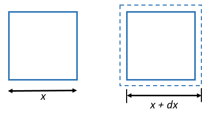
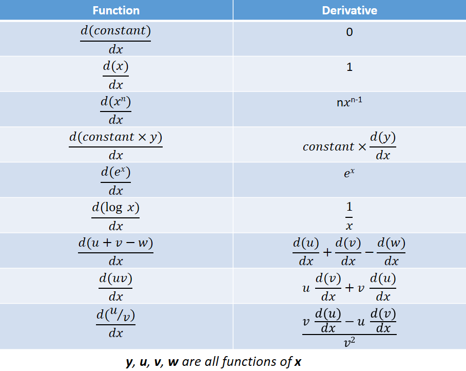
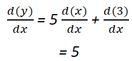
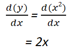
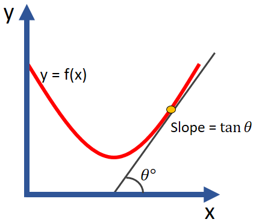
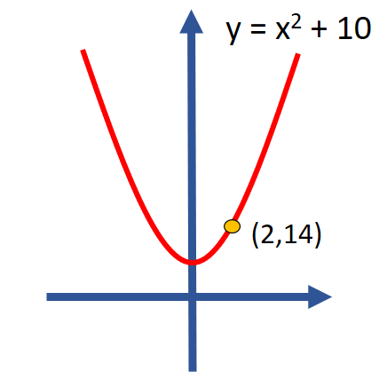
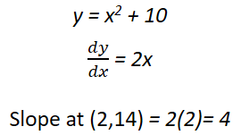
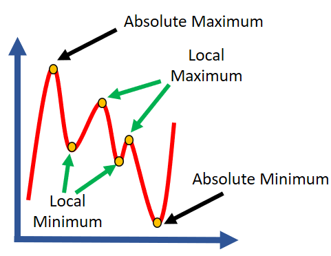
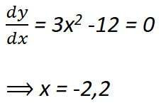
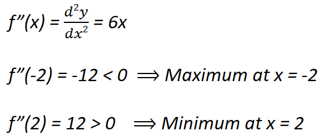

HOME BLOG EBOOKS ABOUT CONTACT SHOP
In calculus, we are dealing with quantities that grow or change and by how much they are changing etc. A mathematical function is made of 2 elements: constants & variables. For example, consider the function: y = 5x + 3. In this function 5 and 3 are constants and x and y are the variables. Here the variable y depends on the variable x or in other words y is a function of x . If x = 0, y = 3 , if x = 1, y = 8, if x = 2, y = 13 and so on.
Now say the quantity x is varying by a very small amount dx (that’s how we denote small changes in calculus), what would be the corresponding small change in quantity y, denoted by dy? Only one way to find out.
y + dy = 5 (x + dx) +3
= 5x + 5dx +3
= (5x + 3) + 5dx
= y + 5dx
Comparing both sides of the equation, we get, dy = 5 dx i.e. if x varies by a tiny amount (say 0.00001), then y would vary by five times as much (0.00005).
Now consider a more practical example; suppose we have a square with length of the side x, then its area y can be expressed by the function, y = x².

y + dy = (x + dx)²
= x² + 2x dx + (dx)²
= y + 2x dx + (dx)²
In this case, dy = 2x dx + (dx)². Remember that dx represented a really small term, therefore (dx)² represents a small fraction of the already small term dx. So the(dx)² term can be neglected as it is insignificant in comparison to other terms in the equation. Therefore,
dy = y + 2x dx
In both the examples, if we were to divide both sides of equation by dx, we get the quantity dy/dx, i.e. change in y per change in x. It’s called as the Derivative of y with respect to x. That’s what we are looking for.
One way to find the derivative would be to proceed as we did so far, plugging in the x + dx term in the function and obtaining dy. This is generally the more difficult approach and it’s not always possible to find the derivative this way for more complex functions. This is where differentiation comes in.
Here are the derivatives of some common terms:

These rules will be sufficient to deal with basic algebraic functions for now. So let’s try and find derivatives of our earlier examples by using this method.
Example 1: y = 5x + 3

Example 2: y = x²

Look how much easier that was!
Slope is the steepness of a curve at particular point on the curve or in other words, slope is how fast a function increases/decreases at a particular point.

The straight line shown in the figure above is called the tangent. Tangent at a point on a curve is the straight line touching the curve at that point and that point only. Hence there can only be one tangent at a point. Mathematically, the slope of a curve at a point is defined as the tan theta of the angle the tangent at the point makes with the positive x-axis.
In the figure below, we have shown tangents at several other points. At point B, the tangent is parallel to the x-axis, hence the slope is zero. Tangent at point D is steeper than the tangent at point C, therefore the value of y increases at a faster rate at D than at C, with increase in x. At point A, the slope is negative (since angle is greater than 90º), meaning the value of y decreases with increase in x.
To find the slope, there is no need to plot the function graphically and draw tangents. The derivative of a function at a point gives its slope at that point.

For example, the slope at point (2,14) of the curve shown above can be found as:

The largest and the smallest values of a function are called Maximum and Minimum respectively. There can only be one absolute (or global) maximum and one absolute (or global) minimum. Other than that, there are several local maxima and minima (plural), which are the largest/smallest values of the function in a particular portion or range of the function. Collectively all these points are called extremas.
Not all functions have extremas.

The slope or the derivative of the function at extremas is zero. For example, the function y = x3– 12x+ 2x -5 has extremas at x =-2, x =2, which can be found out by the equating the derivative to zero as following:

To determine whether the point is a maximum or minimum, we need to find the second derivative i.e. the derivative of the derivative at the critical points we determined. If the value is positive, that means it is a Minimum, and if it’s negative, then it’s a Maximum. If this value turns out to be zero, then that point is neither a maximum or minimum, it is what is called a point of inflection.
